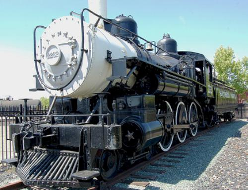

Last updated: 18 July 2015
| Builder: | ALCO (Cooke) |
| Build #: | 2360 |
| Date: | 1897 |
| Engine #: | 2252 |
| Railroad: | Southern Pacific |
| Website: | www.roseville.ca.us |
| Email: | |
| Location: | Vernon St & Atlantic St Roseville CA 95678 North east end of Union Pacific yard. |
| GPS: | 38.752047, -121.281714 Locomotive. |
| Phone: | |
| Status: | Display |
| Notes: | Came from the Placer County Fairgrounds. |
| Class: | T-1 |
| Gauge: | 4'-8½" |
| F.M.Whyte: | 4-6-0 |
| Drivers: | |
| Gear Ratio: | |
| Tractive Effort: | |
| Weight: | |
| Weight on Drivers: | |
| Length: | |
| Boiler: | |
| Cylinders: | |
| Top Speed: | |
| Horsepower: | |
| Fuel: | |
| Fuel Type: | |
| Water: | |
| Steam psi: |